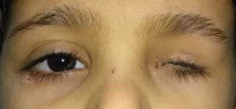

Part I · Ptosis
Complications of ptosis
Especially in unilateral cases:
- 1) Ocular torticollis: due to contracture of the sternomastoid muscle.
- 2) Amblyopia and squint: in long-standing cases, from occlusion and disuse.
N.B. A child with a drooping lid that covers the pupil develops deprivation amblyopia — this is why severe congenital ptosis is operated as early as possible.
